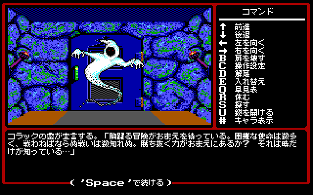

ご意見・誤訳の報告
誤訳や不自然な訳に気づいたら、GitHub の Issues で教えてください。
マイト・アンド・マジック（Might and Magic）シリーズを日本語で遊べるようにする、非公式のファンメイド日本語化プロジェクトです。 GOG.com で販売されている版を対象に、第1部から順に日本語化していきます。 どのパッチも、ゲームのファイルを書き換えずに日本語で遊べるようにし、外せば英語に戻ります。


誤訳や不自然な訳に気づいたら、GitHub の Issues で教えてください。